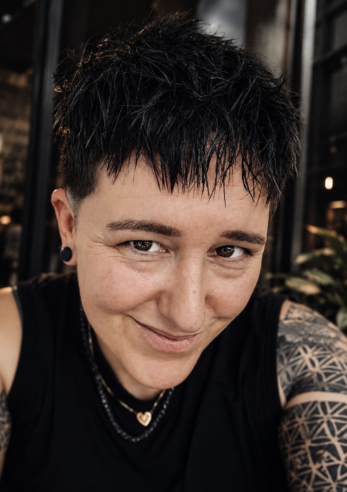
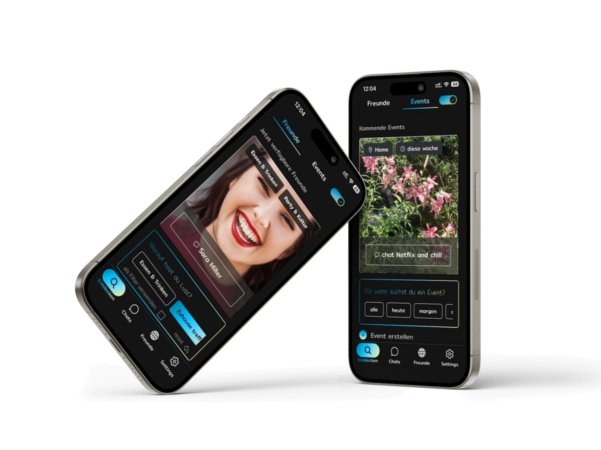
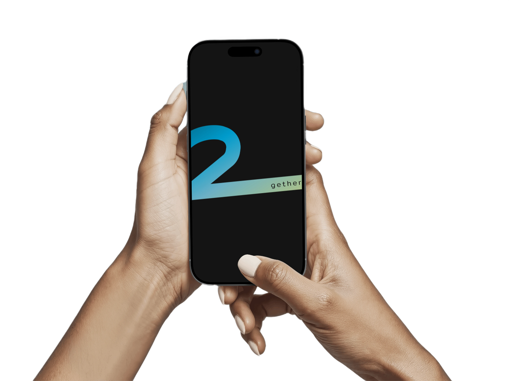
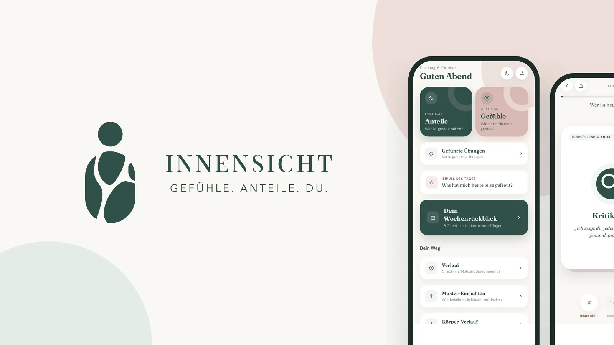
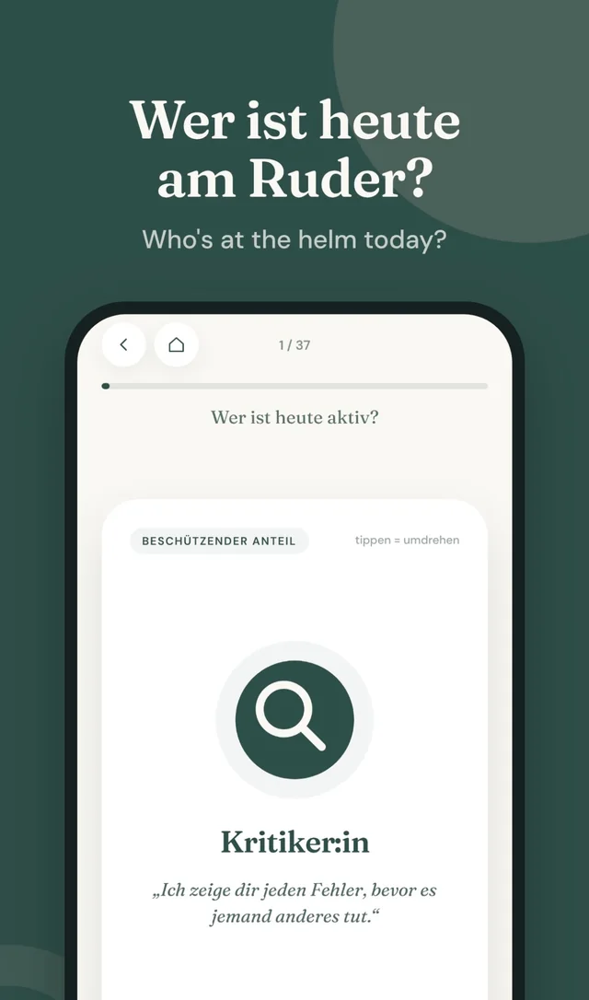
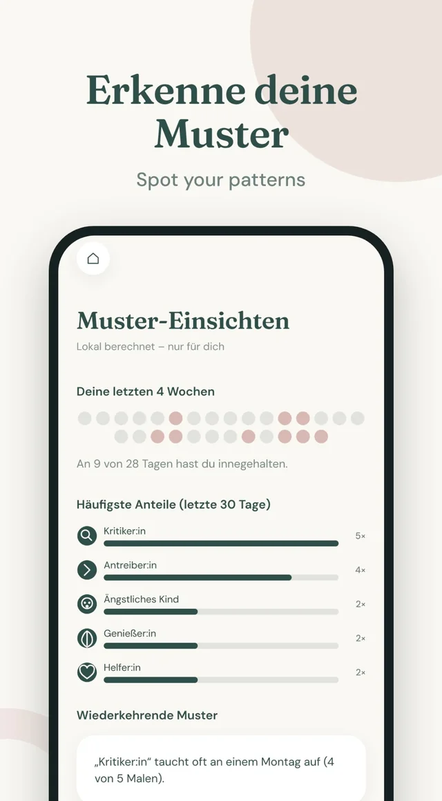
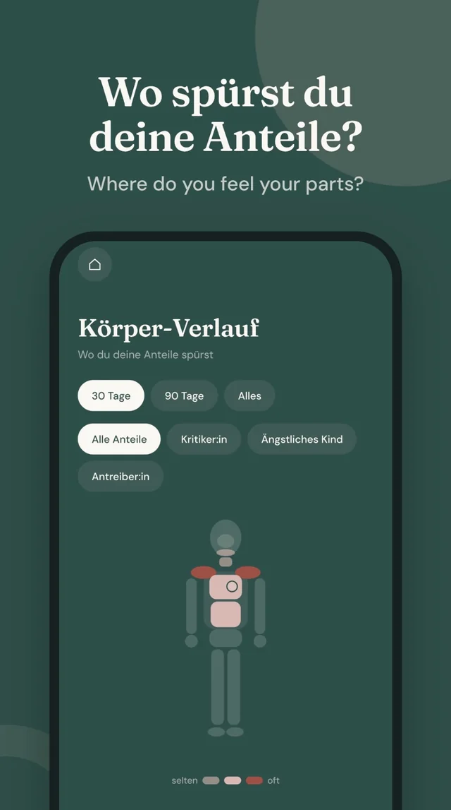
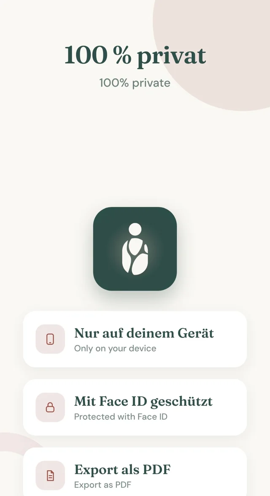

Hi, I'm Julia.
I started in IT consulting, then spent six years at Audi running the project and portfolio side of connected-car services. At Valtech I became a Product Owner and later a designer. On the side I co-founded an app, and these days I love to experiment and build things with AI. That made me a T-shaped all-rounder: deep in UX and product design, broad across project management, product, tech and business, with consistently strong feedback on whatever I take on.
Looking for Product Design & Product Management roles. Fully remote, anywhere in Europe.

Julia
2026 – now
My own small studio. I build apps for the fun of it and try out new things with AI. Innensicht is one of them.
2018 – now
Connected mobility for OEMs and startups: in-car services, expert tools, mobility services. Product Owner for 2 years, then UX Designer for 6+. My responsibilities include client projects, pitches and presales, design systems, workflow definitions, IAM and AI team setup.
2023 – 2026
I co-founded and led the startup, next to my job at Valtech. We released a native iOS and Android social media app. I owned the product from concept and design to release.
2012 – 2018
Prepared steering committees and product decisions for the cross-brand connected-car project. Built cost transparency and a portfolio management process for budget control.
2011 – 2012
Drove internal restructuring and supported strategic purchasing.
2007 – 2011
Grade 1.7, University of applied sciences Landshut.
I get a topic quickly, I learn fast and I execute fast. No long ramp-up.
I turn complexity into clear plans and keep the big picture in view.
Design, product, tech and business in one person. Fewer handoffs, less friction.
I find a way forward and decide instead of getting stuck.
I ship. Remote-first, efficient and dependable.
I keep the team steady under pressure and bring people together.
The client, a truck manufacturer, wanted to introduce a tool on a tablet used by workshop technicians during vehicle servicing. The existing workflows for inspections, diagnostics and repair guidance were complex, time-consuming and not optimized for real workshop conditions. The challenge was to design a tool that supports technicians wearing protective gloves, while also addressing the information needs of fleet and operations managers who require a broader overview of vehicle status and maintenance activities. Balancing these very different user groups without overcomplicating the experience was the core design challenge.
As the sole UX/UI Designer on the project, I worked directly with the OEM's Product Owner and development team throughout the product design process. I collaborated closely with developers to ensure technical feasibility and smooth implementation while aligning design decisions with business priorities.
The core tension was designing one tool for two fundamentally different working modes: technicians who need to execute repair steps fast, often in gloves, with zero tolerance for friction, and fleet managers who need a broader operational overview. Instead of building two separate interfaces, I structured the product around a shared information hierarchy: a stripped-down, high-contrast, large-touch-target layer for in-the-moment repair tasks, and a separate overview layer for fleet-level insight, both drawing on the same underlying data. That meant deliberately cutting lower-frequency features that would have added completeness but slowed down the core repair workflow.
The final designs (wireframes, interaction flows and a documented information hierarchy) were handed over to the OEM's development team as implementation-ready assets. As an external design partner, my engagement ended at handover; I don't have visibility into the tool's later rollout or adoption.
Designing for two audiences with opposite cognitive needs on one product showed me that "more information" and "better information" are often in conflict. The fleet manager's need for oversight could easily have bled into and cluttered the technician's need for speed. The real design work was keeping those two needs from contaminating each other within a single system, not adding features for either group.
On today's social platforms, it's surprisingly hard to know, in the moment, who among your friends actually has time and is up for hanging out right now. Plans get buried in group chats, and feeds show what happened yesterday rather than what's possible today. 2gether set out to close that gap: a social app built around real-time availability instead of curated content.
I co-founded 2gether with one co-founder, who provided the funding. I was solely responsible for product and design, from the very first sketch through release and marketing. A single developer was contracted for implementation; everything else, I owned end-to-end, alongside a full-time job. Timeline: 2023–2026.
With limited resources, one of the most important calls was resisting feature creep: keeping the product tightly focused on real-time availability rather than expanding into a broader social feature set, so the core idea could be validated with real users as early as possible.
The app launched and organically reached several hundred users. Without budget left for marketing, growth stalled, and we've since filed for liquidation.
Running product, design and go-to-market solo taught me how much of "shipping" is prioritization under constraint, and confirmed that even a small, dedicated budget for marketing needs to be secured before launch, not after.


Innensicht is a personal project: a mobile app for emotional self-reflection, combining a swipeable deck of 37 "inner parts" cards with a three-stage emotion wheel and private, on-device history. Beyond the product itself, I wanted to test something for myself: could I, as a solo designer with no engineering team, take an idea all the way to a real, submitted App Store build using only AI-assisted development?
Sole designer and builder: brand, UI/UX design and the full build, all directed through Claude Code without Figma, end-to-end through the release in both stores. No team, no agency, no outsourced development.
User view first. I made it easy to bring the outcomes to a therapist, and I built widgets, reminders and an Apple Health integration so users don't forget to check in. I integrated a second check-in that includes the body. The experience is step by step so it never overwhelms, and it leaves the decision to the user whether to do a step or not. I chose local-only storage (AsyncStorage, no server, no accounts) as a privacy-first stance baked into the product, not bolted on. I used Claude Code as a full development partner rather than a no-code builder or template, to keep the app fully custom.
A real app, not a prototype: live in the App Store and on Google Play. Listing, screenshots, privacy questionnaire and pricing are done. Built solo, and the first version was ready for submission after a single afternoon.
Proof that a designer without a traditional engineering background can own the entire build when directing AI-assisted development with a clear product and design vision. The bottleneck shifted from "can I code this" to "can I make the right product and design decisions fast", which is where the actual value of the afternoon went.





As part of a connected mobility pitch for OEMs, we explored a smart assistant for van drivers that personalizes the travel experience based on habits, preferences and context. The core idea was to support "van life" users who expect very different things from their journeys: from highly spontaneous travelers who want freedom without planning or logistics overhead, to families traveling with children who need structure, predictability and detailed organization. The challenge was not just personalization, but designing a system that could intelligently reduce cognitive load by taking over planning and coordination tasks, without overwhelming users or forcing them into rigid workflows.
My contributions included:
The central decision was to reject a "feature-based app" model in favor of a behavior-driven assistant that adapts to mindset rather than trip type. Rather than building separate flows for spontaneous and family-style travel, which would have fragmented the product into two apps, we designed one adaptive system that dynamically adjusts three variables: planning depth, information density and proactivity. The guiding principle: only show what's needed for this journey style, and handle everything else invisibly in the background.
The concept was presented to OEM stakeholders as part of the pitch and was well received. It validated that a single adaptive system could credibly replace multiple rigid, mode-specific interfaces. As with most pre-sales concept work, I don't have visibility into whether it progressed further internally. What it did produce was a reusable model (personas, adaptive UX logic and a pitch narrative) for framing personalization as cognitive-load reduction in future connected-mobility work.
The most important insight was that good personalization isn't about adding options, it's about removing decisions. Spontaneous travelers need trust and invisibility of the system; structured travelers need control and clarity. The real UX challenge was balancing both without splitting the product into separate apps. It reinforced mental load reduction as a primary UX metric in mobility contexts, where users are already cognitively occupied.
Product & business
Process & organisation
Product design & UX
AI & tech
People & communication
Design & prototyping
Product & collaboration
AI
Build & ship
German
English
Spanish
2026
AI Fluency: Framework & Foundations
Claude Academy (Anthropic) · verify
2026
Claude Code in Action
Claude Academy (Anthropic) · verify
2026
Certified Professional in Automotive Human-Machine Interaction
London School of Business and Administration (LSBA)
2024
Online courses
Udemy: Accessibility & WCAG, UX Design Critique, Responsive UX/UI in Figma, UX/UI Design Principles, UX Writing
2022
Certified UX & Usability Professional
Experience Design Institut (XDi)
2012
ITIL® Version 3 Foundation
TÜV SÜD Akademie
Hi again.
© 2026 Julia Wimmer
Munich · soon Innsbruck